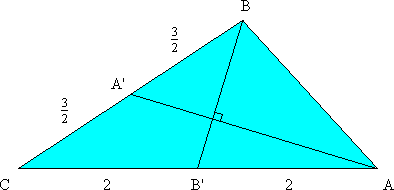

In how many ways can 50! be expressed as a sum of two or more consecutive positive integers?
Hint - Answer - Solution
Show that any two elements (both greater than one) drawn from the same row of Pascal's triangle have greatest common divisor greater than one. For example, the greatest common divisor of 28 and 70 is 14.
1
1 1
1 2 1
1 3 3 1
1 4 6 4 1
1 5 10 10 5 1
1 6 15 20 15 6 1
1 7 21 35 35 21 7 1
1 8 28 56 70 56 28 8 1
Hint - Solution
Find all 8-digit natural numbers n such that n2 ends in the same 8 digits as n. Numbers are written in standard decimal notation, with no leading zeroes.
Hint - Answer - Solution
Let P be a polynomial with integer coefficients. If a, b, c are distinct integers, show that
P(a) = b,
P(b) = c,
P(c) = a,
cannot be satisfied simultaneously.
Hint - Solution
The sum of five real numbers is 7; the sum of their squares is 10. Find the minimum and maximum possible values of any one of the numbers.
Hint - Answer - Solution
Find all pairs of positive integers, x, y, such that x2 + 3y and y2 + 3x are both perfect squares.
Hint - Answer - Solution
Two similar triangles with integral sides have two of their sides the same. If the third sides differ by 20141, find all of the sides.
Hint - Answer - Solution
Suppose the medians AA' and BB' of triangle ABC intersect at right angles. If BC = 3 and AC = 4, what is the length of side AB?
Hint - Answer - Solution
| Nick Hobson nickh@qbyte.org |